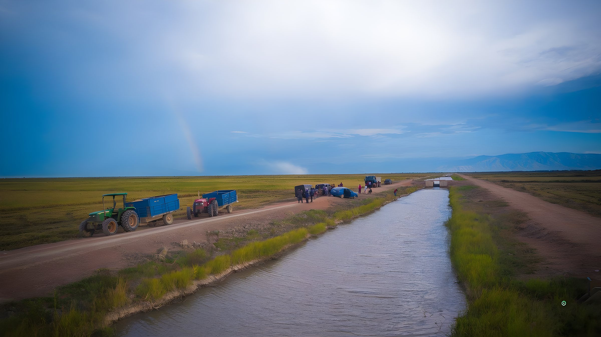

- Before 2006
A neglected farm
Any plan had to start from a deficit of trust as large as the deficit of infrastructure.
- Yields of about 0.8 tonnes of rice per hectare
- Damaged irrigation infrastructure
- Farmers with few resources
- Mistrust between the scheme and the community
The question for othersWhere does transformation begin when farmers have every reason to doubt it?
- From 2006
Water returns, land is settled
Resolving land questions openly showed the community that the scheme's success would not come at its expense.
- The farm and its irrigation were rehabilitated
- Early land disputes and resistance were worked through
- 2,350 hectares of land were returned to villagers
The question for othersHow should land claims be settled before any productivity programme starts?
- Forward contracts
A price before planting
A known buyer at a known price is what makes it rational for a smallholder to invest in seed, inputs and labour.
- Patient engagement with farmers and village leaders
- Forward contracts assured a market for the paddy
- Promises kept season after season
The question for othersCan a market guarantee do more for adoption than a subsidy?
- Nucleus and outgrowers
One integrated system
It combines the scale and services of a commercial operation with the ownership and effort of smallholders.
- A nucleus farm works alongside independent outgrowers
- Inputs, agronomy, mechanisation and finance provided together
- An assured commercial market closes the loop
The question for othersWhich parts of the nucleus role could cooperatives, government or banks play elsewhere?
- 0.8 to 7+ t/ha
The harvest
The same land, worked by the same farmers, produced close to nine times as much once the services around them were connected.
- Rice yields rose from about 0.8 to more than 7 tonnes per hectare
- 300+ farmers reported as participating
- Household incomes improved
The question for othersWhich gains depend on irrigation, and which could travel to rain-fed crops?
- Beyond the farm
A rural economy grows
Prosperity that stays in the village is the real measure of success.
- Education, healthcare and roads
- Employment and new rural enterprises
- Greater participation by women farmers
- Farmers moving into milling and storage
The question for othersWhat would it take to repeat this across countries, crops and institutions?
Africa's prosperity begins with its farmers
A book by Mahesh Patel
Abundance: Growing Africa into a middle-income economy
More than four decades of experience, and one conviction: Africa's smallholder farmers can drive its economic transformation.

The visionA memoir and a manifesto for Africa's agricultural future. 
The farmersNot the problem, but the solution, once the system around them works. 
The evidenceKapunga, Tanzania: from about 0.8 to more than 7 tonnes of rice per hectare. 
The modelEight steps any government or business can adopt and adapt.
- AuthorMahesh Patel
- As narrated toProf. Arun Tiwari and Dr Charity Mutegi
- The evidenceKapunga rice scheme, Tanzania
- The horizonVision 2050 for Sub-Saharan Africa
The problem is not the farmer. It is the ecosystem
Africa has enormous agricultural resources, yet millions of farmers remain in low-productivity, subsistence agriculture. Switch between the two pictures to see why.
Seed without water. A loan without a buyer. Each service arrives alone, on its own timetable, and the farmer carries all of the risk.
Seven services planned together and run on commercial terms. The same farmer, on the same land, becomes an enterprise.
Select a serviceChoose any circle to see its role.
Watch one rice scheme change, stage by stage
In southern Tanzania, a farmer-centric approach connected irrigation, improved seed, agronomy, mechanisation, finance and assured markets. Scroll to see the field change.
The same hectare, close to nine times the harvest
0.8t/ha
Before rehabilitation: about 0.8 tonnes per hectare on a neglected farm.
Source: Kapunga Rice Project (KRPL) case studies. Indicative historical results; reporting year for each figure [TODO: confirm from approved data sheet].
Five shifts from survival to prosperity
Each shift replaces a pattern that has kept African agriculture small with one that lets it compound. Keep scrolling to move through them.
A book about Africa's future, rooted in experience
Part memoir, part manifesto. Abundance follows Mahesh Patel's journey through African agriculture and turns it into a plan for 2050.
Why do Africa's farmers remain poor on productive land?
The structural challenge and the scale of Africa's agricultural potential: land, water and a young workforce, held back by a fragmented system around the farmer.
- Subsistence
- Fragmentation
- Potential
What happens when the system around the farmer is connected?
How commercial enterprises and local partnerships transform rural economies, including Kapunga: land disputes, patient engagement, forward contracts and the results that followed.
- Kapunga
- Outgrower models
- Trust
What must governments, businesses and institutions do now?
A transformation manifesto: five strategic shifts and the institutions, patient capital and policies needed to turn opportunity into shared prosperity.
- Policy
- Patient capital
- Youth and women

Mahesh Patel
Founder of ETG and of Empowering Farmers Foundation
From trading crops across Africa to building systems around farmers, he came to one conviction: agriculture creates commercial value and lasting rural prosperity when the system around the farmer works.
“As farmers grow, we grow.”
The idea at the heart of his work
- Seeing is believingFarmers adopt what they see working on a neighbour's field.
- Ubuntu“I am because we are.” Transformation is a shared undertaking.
What can you take from Kapunga?
Choose your perspective. Each lesson links to the step of the model where it applies.
Coordinate institutions around the farmer
Ministries, agencies and lenders planning together instead of running parallel projects.
Step 1: Understand the farmerSettle land questions openly
Trust comes before productivity. At Kapunga, 2,350 hectares were returned to villagers.
Step 2: Build trustBuild the infrastructure first
Irrigation, roads and storage make every other investment less risky.
Step 3: Address infrastructureMake finance fit the crop cycle
Enabling policy and guarantees for credit that is repaid from the harvest.
Step 5: Provide finance
Bring patient capital
Transformation takes years; the early seasons will not pay for themselves.
Step 3: Address infrastructureBuild outgrower models that pay
Integrated value chains where the company succeeds only if its farmers do.
Step 4: Enable productivityShare risk and assure the market
Forward contracts turn uncertainty into investment.
Step 6: Connect to marketsAdd value close to the farm
Milling and storage keep income and jobs in the rural economy.
Step 7: Create rural value addition
The next chapter of Abundance must be written together
Governments, agribusinesses, investors and development institutions are invited to explore the ideas in the book and join a practical dialogue on agricultural transformation.
Request a policy dialogue
A briefing or institutional discussion on farmer-centric agricultural development.
Start a policy requestExplore a partnership
Value chains, finance, technology, processing and replicable project models.
Propose a partnershipEnquire about the book
Availability, approved extracts, event participation and interviews.
Ask about the book